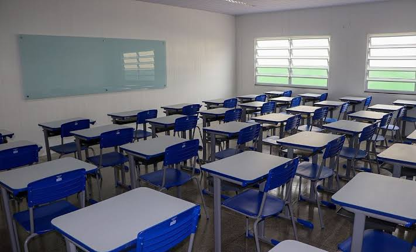
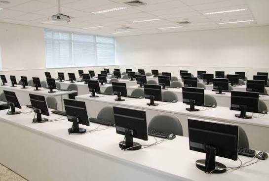

🔒
Privacidade
Cada sessão utiliza um workspace próprio e isolado.
MAIS CONTROLE. MENOS MANUTENÇÃO.
O SafeWall ajuda a manter computadores compartilhados em um estado seguro e organizado, com sessões isoladas e restauração simplificada.
Conheça o SafeWall →Pensado para escolas, laboratórios e equipes de TI.
O DESAFIO
Quando várias pessoas usam a mesma máquina, configurações e programas podem ser alterados. Essas mudanças ficam para o próximo usuário e, com o tempo, o computador pode ficar desorganizado, lento ou instável.
A SOLUÇÃO
O SafeWall propõe um ambiente próprio e isolado para cada sessão de uso e uma forma simples de restaurar o estado inicial do computador.
Cada sessão utiliza um workspace próprio e isolado.
Retorne ao estado inicial de forma simples, com um clique.
Ajude a reduzir o esforço de organização e manutenção das máquinas.
PREÇO SIMPLES
Uma opção pensada para ambientes com muitos usuários e máquinas compartilhadas.
Preço apresentado pelo projeto
Inclui acesso aos serviços e suporte, conforme a apresentação do projeto.
Quero saber maisFEITO PARA

Escolas
Computadores usados por diferentes turmas.

Laboratórios de informática
Máquinas compartilhadas ao longo do dia.
Equipes de TI
Mais organização e menos manutenção manual.
FALE COM NOSSA EQUIPE
Preencha o formulário abaixo para tirar dúvidas ou saber mais sobre nossa solução para computadores compartilhados.